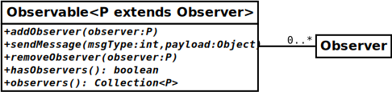

Package fr.cnrs.iees.rvgrid.observer
package fr.cnrs.iees.rvgrid.observer
The Observer pattern.
From wikipedia:
The observer pattern is a software design pattern in which an object, named the subject, maintains a list of its dependents, called observers, and notifies them automatically of any state changes, usually by calling one of their methods.Here the subject is the
Observable interface and the observer is the Observer
interface.
This pattern was initially present in java up to version 8 but has been deprecated in version 9. Since we needed it to implement ADA's rendezvous pattern, we re-implemented our own.
Observers are registered into an Observable using the addObserver(...)
method. Later, the Observable notifies all its registered Observers of any
significant change using its sendMessage(...) method. Note that the list of Observers
can be dynamic during the life cycle of an Observable, i.e. they can come and go at
runtime.
- Author:
- Jacques Gignoux - 1 juin 2021
-
Interface SummaryInterfaceDescriptionObservable<P extends Observer>A class that can send messages about its state to
Observers of the specified type.An interface for objects that can observe anObservable, i.e.